Ari Atoll is renowned for its beautiful resorts and fantastic diving spots.
The waters here are home to a variety of marine species, including whale
sharks and vibrant coral reefs. Whether you’re diving, snorkeling, or just
relaxing on the beach, Ari Atoll is a must-visit for nature lovers.
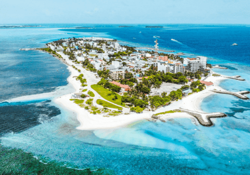
Maafushi
Maafushi is a local island that offers a more authentic Maldivian
experience. Known for its beautiful beaches and budget-friendly
guesthouses, visitors can enjoy water sports like snorkeling and
diving. The island’s relaxed vibe makes it a perfect spot for those
looking to experience local culture.
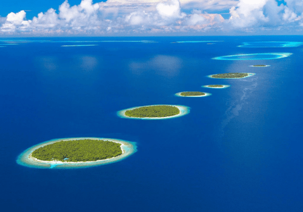
Baa Atoll
Baa Atoll, a UNESCO Biosphere Reserve, is famous for its incredible
biodiversity, including Hanifaru Bay, known for seasonal manta ray
gatherings. The atoll offers stunning resorts, pristine beaches, and
exceptional diving opportunities to explore coral reefs teeming with
marine life.
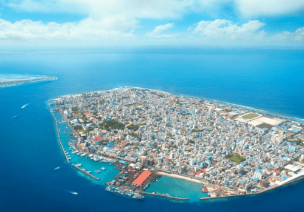
Malé
The capital city of the Maldives, Malé, is a bustling hub of culture
and commerce. Visitors can explore the Maldives Islamic Centre, the
vibrant fish market, and the local shops. Don’t miss the chance to
visit the National Museum to learn about the country’s rich history
and heritage.
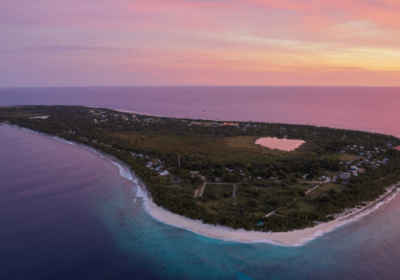
Fuvahmulah
Fuvahmulah is a unique island with a diverse landscape, including
freshwater lakes and lush greenery. It is known for its incredible
diving experiences, particularly for spotting tiger sharks. The
island's local culture and hospitality provide visitors with a
different perspective of the Maldives.
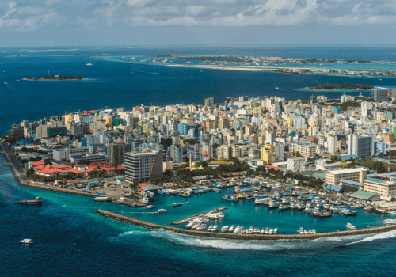
Hulhumalé
Hulhumalé is a reclaimed island close to Malé, designed to
accommodate the growing population. It features beautiful beaches,
modern facilities, and a variety of accommodation options. Visitors
can enjoy water sports, explore local cafes, and take a stroll along
the beach promenade.
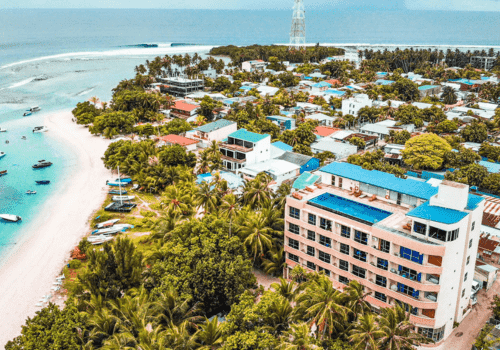
Thulusdhoo
Thulusdhoo is famous for its surfing spots, particularly Coke’s surf
break. The island offers a blend of local culture and adventure,
with opportunities for water sports, snorkeling, and exploring
nearby sandbanks. It’s a perfect destination for surf enthusiasts.
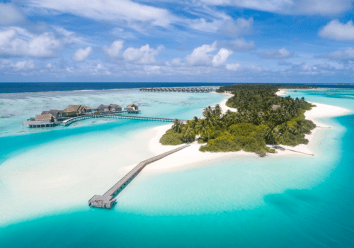
Niyama Private Islands
Niyama Private Islands is a luxurious resort offering unique
experiences like underwater dining and a music-themed bar. The
islands provide stunning overwater villas, pristine beaches, and a
variety of water sports, making it a top choice for luxury
travelers.
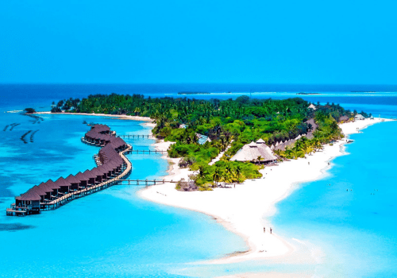
Kuredu Island
Kuredu Island is a popular resort destination known for its stunning
beaches and diverse water sports. The island offers a wide range of
accommodations, from beach villas to overwater bungalows, along with
excellent diving and snorkeling opportunities in vibrant coral
reefs.
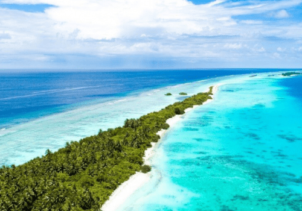
Dhigurah
Dhigurah is known for its long sandy beaches and laid-back atmosphere. The
island is popular for diving and snorkeling, with opportunities to see whale
sharks and vibrant coral reefs. Visitors can enjoy local cuisine at
beachside cafes and explore the charming village.
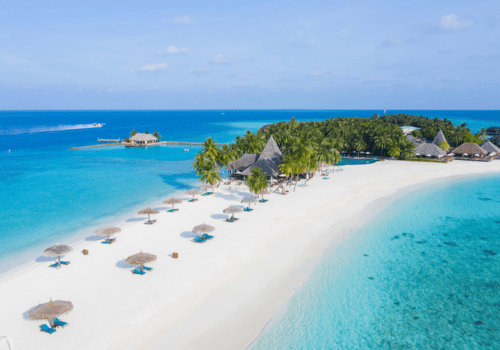
Veligandu Island
Veligandu Island is known for its stunning beaches and romantic atmosphere,
making it a popular destination for honeymooners. The island features
beautiful resorts, excellent diving sites, and a vibrant house reef,
providing a perfect backdrop for relaxation and exploration.
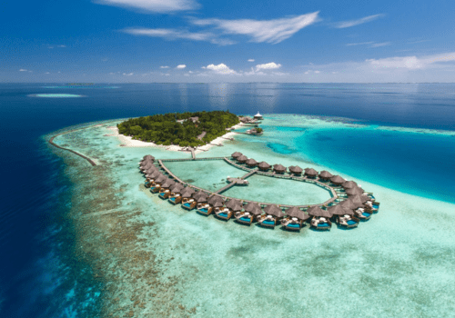
Baros Maldives
Baros Maldives is a luxurious resort known for its impeccable
service and stunning natural beauty. Visitors can enjoy private
villas, world-class dining, and various water activities. The
resort's house reef is perfect for snorkeling, providing access to
vibrant marine life just steps from the beach.
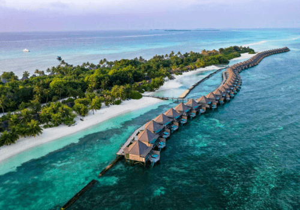
Lhaviyani Atoll
Lhaviyani Atoll is known for its stunning natural beauty and vibrant
marine life. The atoll features some of the best dive sites in the
Maldives, including shipwrecks and vibrant coral gardens. Visitors
can enjoy water sports, relax on pristine beaches, and explore local
islands like Naifaru.
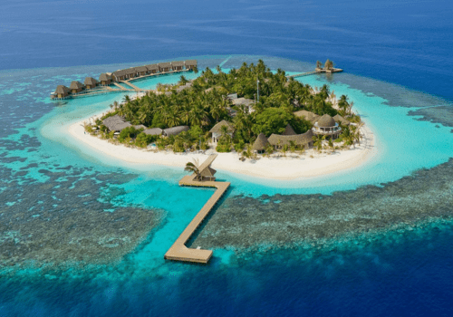
Kandolhu Island
Kandolhu Island is a small, picturesque island resort offering an
intimate escape with beautiful beaches and luxurious accommodations.
The resort features a variety of dining options and excellent diving
and snorkeling spots, making it ideal for couples and honeymooners
looking for a romantic getaway.
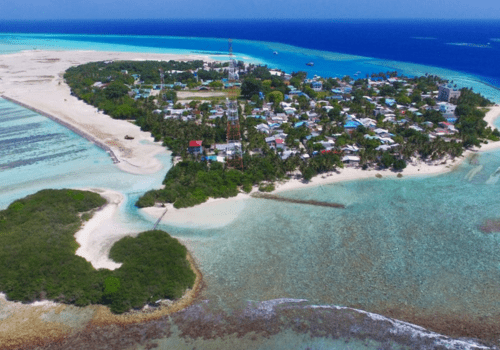
Thulusdhoo Island
Thulusdhoo Island is famous for its surf breaks and local culture.
The island offers a laid-back vibe, beautiful beaches, and
opportunities for surfing, snorkeling, and diving. Visitors can
experience the local way of life while enjoying the island's natural
beauty.
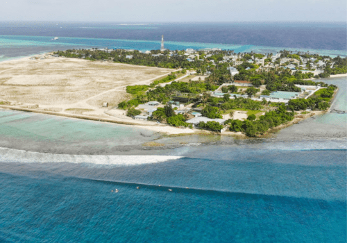
Himmafushi
Himmafushi is a local island that offers a unique blend of Maldivian
culture and stunning natural beauty. Known for its surfing spots,
particularly "Chicken's," it is an excellent destination for surfers
and beachgoers alike. Visitors can explore local shops, enjoy fresh
seafood, and immerse themselves in the local culture.
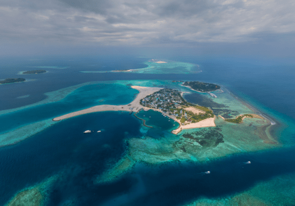
Guraidhoo
Guraidhoo is a charming local island known for its friendly
atmosphere and beautiful beaches. The island offers a glimpse into
Maldivian life, with opportunities to enjoy local cuisine and
participate in traditional activities. Guraidhoo is also a great
spot for snorkeling and diving.
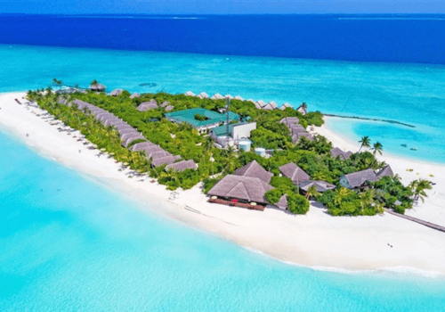
Baa Atoll's Dhigufaru Island
Dhigufaru Island is a beautiful, unspoiled island resort located in
Baa Atoll, offering an exclusive and tranquil experience. Visitors
can enjoy luxury accommodations, pristine beaches, and a wide range
of water activities, including snorkeling and diving in the vibrant
coral reefs.
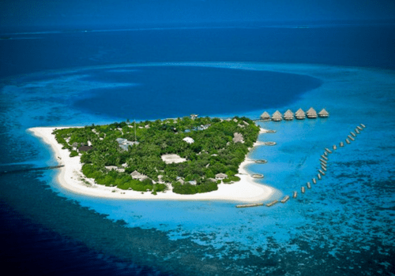
Velidhu Island
Velidhu Island is known for its natural beauty and laid-back
atmosphere. The island features white sandy beaches, lush
vegetation, and a vibrant house reef perfect for snorkeling.
Visitors can relax in beachfront accommodations and enjoy the
serenity of this beautiful island paradise.
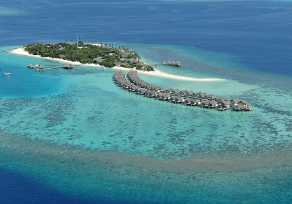
Raa Atoll
Raa Atoll is known for its stunning dive sites, including Hanifaru Bay,
famous for manta ray and whale shark sightings. Visitors can explore the
atoll's luxurious resorts, enjoy pristine beaches, and indulge in water
activities such as snorkeling, kayaking, and sailing.
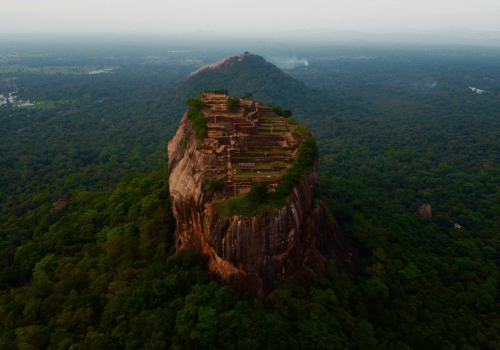
Sigiriya Rock Fortress
One of Sri Lanka's most iconic landmarks, Sigiriya is a UNESCO World
Heritage Site known for its ancient rock fortress that rises
dramatically above the jungle. Visitors can explore the remnants of
the royal palace, admire the stunning frescoes, and enjoy panoramic
views from the summit.
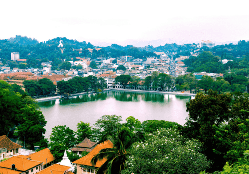
Kandy
Kandy, the cultural capital of Sri Lanka, is home to the sacred
Temple of the Tooth Relic, which houses a relic of the Buddha. The
city is surrounded by lush hills and the scenic Kandy Lake, making
it a serene spot for exploration. Experience traditional Kandyan
dance performances and explore the bustling local markets.
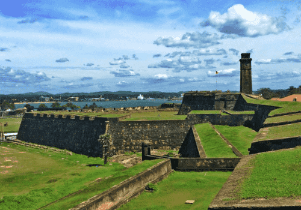
Galle
Known for its well-preserved colonial architecture, Galle is a
historic city located on the southwestern coast. The Galle Fort, a
UNESCO World Heritage Site, features cobblestone streets, charming
boutiques, and stunning ocean views. Visitors can explore the fort's
ramparts, enjoy fresh seafood, and immerse themselves in the vibrant
culture.
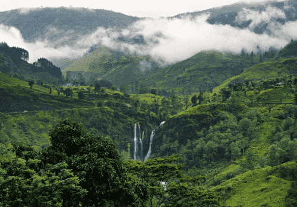
Nuwara Eliya
Often referred to as "Little England," Nuwara Eliya is known for its
cool climate, lush tea estates, and colonial architecture. Visitors
can tour tea plantations, visit the Hakgala Botanical Gardens, and
enjoy outdoor activities like hiking and boating at Gregory Lake.
The stunning landscapes make it a perfect getaway from the heat.
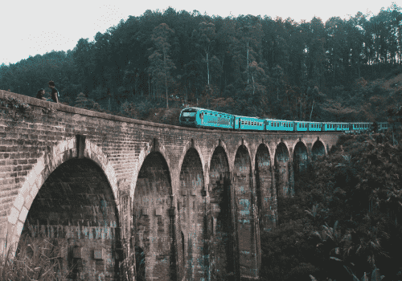
Ella
Nestled in the hills, Ella is a picturesque town famous for its breathtaking
scenery and lush tea plantations. Hiking enthusiasts can trek to Ella Rock
or Little Adam's Peak, while the Nine Arches Bridge offers a stunning
backdrop for photos. Don’t miss the chance to visit the Ravana Falls and
relax in the tranquil atmosphere.
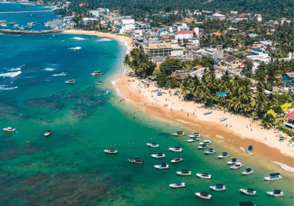
Hikkaduwa
Hikkaduwa is a popular beach destination known for its vibrant coral reefs
and crystal-clear waters. Ideal for snorkeling and diving, it offers an
underwater paradise teeming with marine life. Relax on the sandy beaches,
enjoy water sports, and savor delicious seafood at beachside restaurants.
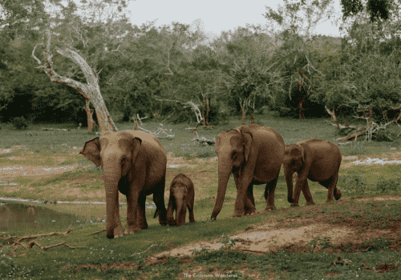
Yala National Park
Yala is one of Sri Lanka's premier national parks, famous for its
diverse wildlife and stunning landscapes. Home to leopards,
elephants, and a variety of bird species, it offers exhilarating
safari experiences. Explore the park's rich ecosystems and enjoy the
opportunity to witness wildlife in their natural habitat.
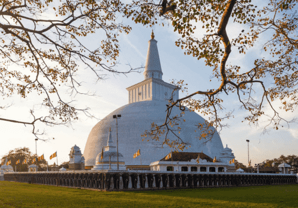
Anuradhapura
As one of the ancient capitals of Sri Lanka, Anuradhapura is rich in
historical and religious significance. This UNESCO World Heritage
Site is dotted with ancient stupas, temples, and sacred trees,
including the famous Sri Maha Bodhi tree. Explore the ruins and
learn about the island's rich Buddhist heritage.
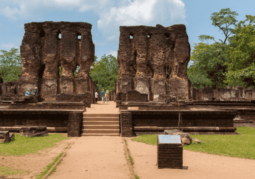
Polonnaruwa
Another UNESCO World Heritage Site, Polonnaruwa was the second
capital of Sri Lanka. It boasts well-preserved ruins of ancient
temples, palaces, and gardens. Key attractions include the Gal
Vihara rock temple, with its stunning Buddha statues, and the Royal
Palace complex, showcasing the grandeur of Sri Lankan history.
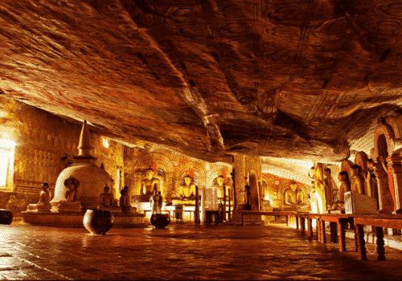
Dambulla Cave Temple
The Dambulla Cave Temple, a UNESCO World Heritage Site, features a
complex of caves filled with intricate Buddha statues and colorful
frescoes. Dating back to the 1st century BC, this impressive site
offers a glimpse into the island's rich Buddhist heritage while
providing breathtaking views of the surrounding landscape.
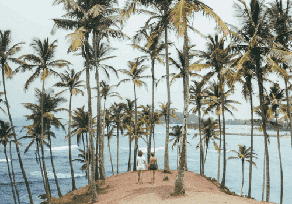
Mirissa
Mirissa is a charming coastal town known for its stunning beaches
and vibrant nightlife. It’s a popular spot for whale watching,
especially during the migration season. Visitors can relax on the
golden sands, enjoy water sports, or indulge in fresh seafood at
beachside cafes.
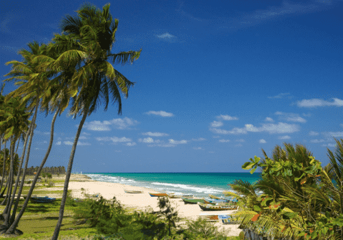
Trincomalee
Located on the northeastern coast, Trincomalee boasts beautiful
beaches, natural harbors, and historical sites. Key attractions
include the Koneswaram Temple, Fort Frederick, and the stunning
Nilaveli and Uppuveli beaches, ideal for swimming and snorkeling in
crystal-clear waters.
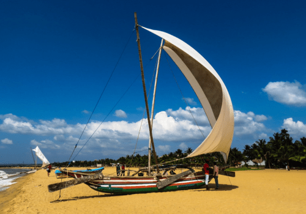
Negombo
Negombo is a vibrant coastal city known for its picturesque beaches
and rich fishing industry. Explore the Dutch Fort, relax by the
beach, and enjoy fresh seafood at local restaurants. The lively
market scene offers a taste of local culture and craftsmanship.
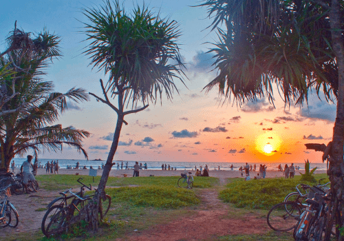
Bentota
Bentota is a beach resort town famous for its water sports and
luxury hotels. Enjoy activities like jet skiing, windsurfing, and
river safaris on the Bentota River. The pristine beaches provide a
perfect backdrop for relaxation and sunbathing.
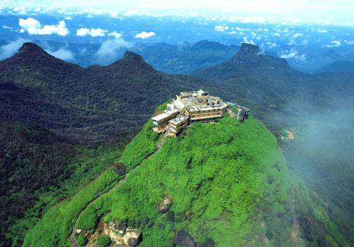
Adam’s Peak (Sri Pada)
Adam’s Peak, a sacred pilgrimage site, is famous for its striking pyramid
shape and the "sacred footprint" believed to be of Buddha, Shiva, or Adam.
The challenging hike to the summit is rewarded with breathtaking sunrise
views and a spiritual experience amid the stunning mountain landscape.
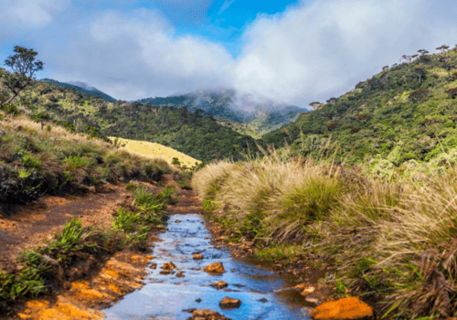
Horton Plains National Park
Horton Plains National Park is a UNESCO World Heritage Site known for its
breathtaking landscapes, unique ecosystems, and the famous World’s End
viewpoint. Enjoy trekking through the misty hills, encountering diverse
flora and fauna, and experiencing the stunning drop at the viewpoint.
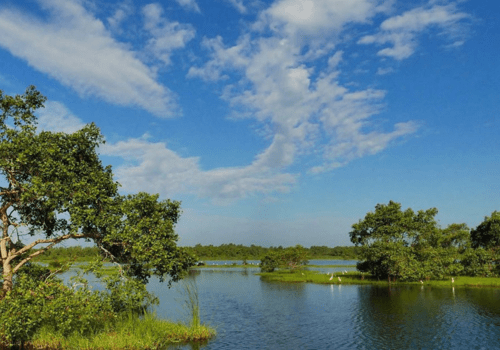
Kalametiya
Kalametiya is a lesser-known gem with pristine beaches and a serene
environment, ideal for nature lovers. The Kalametiya Bird Sanctuary
attracts birdwatchers and offers opportunities to see various bird
species in their natural habitat.
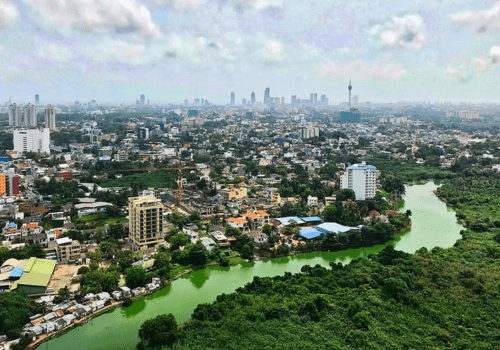
Sri Jayawardenepura Kotte
The administrative capital of Sri Lanka, Sri Jayawardenepura Kotte,
is home to the Parliament complex and beautiful parks. Visitors can
explore the nearby Buddhist temples and learn about the country's
political history while enjoying the serene atmosphere.
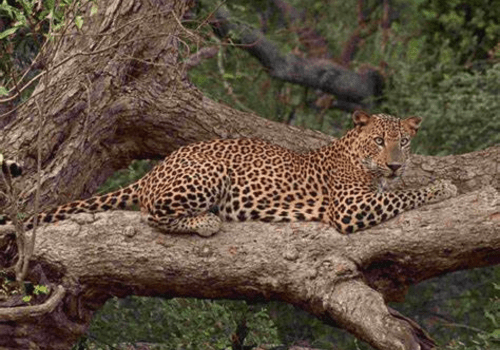
Wilpattu National Park
Wilpattu is one of the largest national parks in Sri Lanka, known
for its unique natural lakes, rich wildlife, and serene landscapes.
It is less crowded than Yala, offering an excellent opportunity to
spot leopards, sloth bears, and various bird species in their
natural habitat.
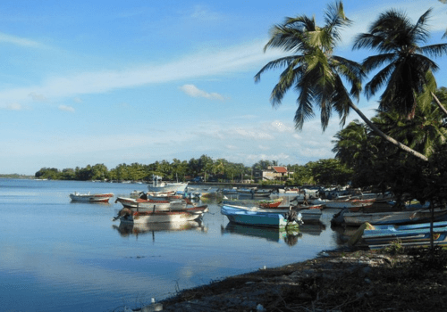
Batticaloa
Batticaloa, located on the eastern coast, is known for its stunning
beaches and historical significance. Visitors can explore the
historic Batticaloa Fort, enjoy the serene Batticaloa Lagoon, and
relax on the beautiful Pasikuda Beach, which offers crystal-clear
waters and vibrant marine life. The area is also known for its
unique singing fish and the rich blend of Tamil and Sinhalese
cultures.
{kind=link}